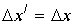
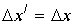

|
В. И. ЕЛИСЕЕВ ВВЕДЕНИЕ В МЕТОДЫ ТЕОРИИ
ФУНКЦИЙ ПРОСТРАНСТВЕННОГО КОМПЛЕКСНОГО ПЕРЕМЕННОГО |
|
3.4.5. Эксперимент Майкельсона–Морли с позиции комплексного пространства.
Эксперимент Майкельсона- Морли был первой попыткой определить скорость движения Земли относительно эфира. Для эксперимента использовался прибор, называемый интерферометром. Схема эксперимента хорошо известна, также как известен отрицательный его результат. Главные части прибора: источник света А, посеребренная полупрозрачная стеклянная пластинка В, два зеркала С и Е. Расстояние зеркал С и Е от пластинки В равны
. Пластинка В расщепляет падающий пучок света на два, перпендикулярных друг другу. Пучки отражаются от зеркал на пластинку В. Если прибор покоится то время прохождения пучков света по двум направлениям одинаково. Если прибор движется со скоростьюОбщее время для этого направления равно
.Далее подсчитывалось время в перпендикулярном направлении расщепления пучка света.
При движении прибора свет пройдет по гипотенузе, так что будем иметь равенство
или ,откуда
. В силу симметрии при возврате свет проходит тоже расстояние и общее время по этому направлению равно . Однако не взирая на существенную разницу во времени интерференционная картина не возникала. Результат опыта оказался отрицательным. Это был тупик. В 1892 г. для объяснения опыта Майкельсона –Морли ирландский физик Д.Ф.Фиджеральд и нидерландский физик-теоретик Х.А. Лоренц выдвинули гипотезу о сокращении движущихся тел в направлении движения. Если длинна покоящегося тела есть , то длинна движущегося тела со скоростью. В этом случае .
Стало очевидным, что если прибор сокращается именно так, то эффекта от опыта не следует ожидать.
Современные представления об интервале, совместно с комплексной пространственной алгеброй и геометрией позволяют по иному описать опыт Майкельсона-Морли. Свет, как неоднократно утверждалось идет со скоростью С по изолированному направлению в комплексном пространстве. Линейное сложение скорости света с объектом, как это делали исследователи сто лет назад недопустимо. Нет скорости равной
. Есть скорость.Модуль этих скоростей равен
.Поэтому время прохождения луча света в первом продольном направлении равно
.Это время равно
, так как модуль скорости не зависит от направления. Так, что общее время первого направления движения луча света равно .Для второго направления рассматривается тот же прямоугольный треугольник.
. Или .
Корректировка в описании опыта Майкельсона –Морли не сказывается на преобразованиях Лоренца.
Возьмем преобразования Лоренца в дифференциалах
и рассмотрим их с выработанных позиций комплексного пространства. Имеем координатную матрицу преобразований .В комплексном пространстве запишем равенство комплексов
|
(3.4.43.) |
Модули левой и правой части, возведенные в квадрат дают равенство интервалов
, из равенства комплексных аргументов левой и правой части комплекса имеем.
Рассмотрим варианты проекций на координатные оси. Если
, тоЭто выполнимо при двух условиях
.Этот вариант приводит к
Имеется вариант
, и при , нополучаем
.В полном соответствии с выводами теории относительности.
Если знаменатель аргументов равен нулю, то рассматривается проекция на ось jix. При этом возможны следующие варианты:
,
если
. Если , тоЕсли
, тоОстается единственный вариант
при этих условиях
при Тогда имееми получаем соотношение теории относительности
В комплексном представлении преобразований Лоренца выделим подпространство делителей нуля. На основании пространственной комплексной алгебры это достигается условиями: для левой части равенства
и комплекс записывается в виде|
(3.4.44.) |
Для правой части комплекса имеем условие
и комплекс записывается в двух равноправных выражениях|
|
(3.4.45.) |

Сравнение левой и правой части подпространств делителей нуля дают выражения преобразований Лоренца. Таким образом преобразования Лоренца остаются справедливыми и для подпространства делителей нуля. Подпространство было выделено для любых соотношений
.
Таким образом доказано равенство в подпространстве делителей нуля
, откуда имеем . Аналогично получим . В подпространстве делителей нуля временная координата равна пространственной. Координаты имеют начало из разных точек окрестности нуля. Взаимно перпендикулярны и не имеют суммарного модуля при координатной записи преобразований Лоренца. Суммарная пространственно временная точка в этом случае является мнимой. Из соотношения имеем . Таким образом, доказано что подпространство делителей нуля адекватно изолированному направлению движения систем относительно друг друга со световой скоростью.
. Аналогично получим . В подпространстве делителей нуля временная координата равна пространственной. Координаты имеют начало из разных точек окрестности нуля. Взаимно перпендикулярны и не имеют суммарного модуля при координатной записи преобразований Лоренца. Суммарная пространственно временная точка в этом случае является мнимой. Из соотношения имеем . Таким образом, доказано что подпространство делителей нуля адекватно изолированному направлению движения систем относительно друг друга со световой скоростью.
Общие выводы. Эксперимент Майкельсона –Морли доказал, что пространство –время является комплексным. Комплексность пространства понимается не в смысле введения мнимых единиц в координатные матрицы, а в том смысле, что временная и пространственная координаты имеют разные точки в начале координат. Координатная запись преобразований Лоренца, исключила из физических исследований это может быть самое важное условие для изучения структуры пространства. Псевдоевклидовая геометрия четырехмерного пространства предпологает в начале координат физическую окрестность нуля, из разных точек которой берут начало координатные оси. Координатные оси нельзя рассматривать как линии. Координатные оси представляют цилиндрические трубочки  - радиуса в сечении. Одна из таких осей образует общее изолированное направление для обоих систем отсчета. Изолированное направление обусловлено наличием в природе предельной скоростью движения одной системы относительно другой. Световой сигнал распростроняется по мнимым точкам в пространстве и его интервал нельзя приравнять нулю, как это трактует теория относительности, вследствии наличия изолированного направления, выражаемого функцией арктангенс от i- мнимой единицы, так как четырехмерный пространственно временной комплекс при
- радиуса в сечении. Одна из таких осей образует общее изолированное направление для обоих систем отсчета. Изолированное направление обусловлено наличием в природе предельной скоростью движения одной системы относительно другой. Световой сигнал распростроняется по мнимым точкам в пространстве и его интервал нельзя приравнять нулю, как это трактует теория относительности, вследствии наличия изолированного направления, выражаемого функцией арктангенс от i- мнимой единицы, так как четырехмерный пространственно временной комплекс при  имеет вид
имеет вид
Откуда имеем
.
Окрестность нуля, выражаемая величиной
есть чисто физическая величина, которая может быть определена из энергетических зависимостей систем отсчета.При любой координатной записи, если использовать интервал Миньковского в галилеевой записи или тензорной в едином комплексном пространстве времени ситуация не меняется.
Мини оглавление:
[0], [1.1.1, 1.1.2, 1.1.3, 1.1.4, 1.1.5, 1.1.6, 1.1.7, 1.1.8, 1.2, 1.2.1, 1.2.2, 1.2.2.a, 1.2.2.b, 1.2.2.c, 1.2.2.d, 1.2.2.e, 1.2.2.f, 1.2.2.g, 1.2.2.h, 1.2.3, 1.3.1, 1.3.2, 1.3.3, 1.3.4, 1.3.5, 1.3.6, 1.4.1, 1.4.2, 1.5, 1.6, 1.7.1, 1.7.2, 1.7.3.1, 1.7.3.2, 1.7.3.3, 1.7.4.1, 1.7.4.2, 1.8.1], [2.1, 2.2],[3.1, 3.2, 3.3, 3.4.1, 3.4.2, 3.4.3, 3.4.4, 3.4.5],[4.1, 4.2, 4.3, 4.4],[5.1, 5.1.Рис.52, 5.2, 5.3, 5.4, 5.4.Т1, 5.4.Т2, 5.4.Т3, 5.5.1, 5.5.2, 5.5.3, 5.5.4],[6.1.1, 6.1.2, 6.2.1, 6.2.2, 6.2.3, 6.2.4, 6.2.5, 6.3, 6.4.1, 6.4.2, 6.5.1, 6.5.2],[7.1, 7.2, 7.3, 7.4, 7.5, 7.6, 7.7.1, 7.7.2, 7.8.1, 7.8.2, 7.8.3, 7.9],[8.1, 8.2.1, 8.2.2, 8.3, 8.4, 8.5, 8.6, 8.6.T1, 8.7, 8.8.1, 8.8.2, 8.8.3, 8.9.1, 8.9.2, 8.9.3, 8.10, 8.10.T2, 8.10.T3],[9.1, 9.2, 9.3, Рис.88, 89, 90, 91, 92, 93, 94, 95, 96, 97, 98, 99, 100],[10.1, 10.2, 10.3, 10.4, 10.5, 10.6, 10.7, 10.8, 10.9, 10.10, 10.11, 10.12, 10.13, 10.14, 10.15.1, 10.15.2, 10.16.1, 10.16.2, 10.17, 10.18],[11]
Размещенный материал является электронной версией книги: © В.И.Елисеев, "Введение в методы теории функций пространственного комплексного переменного", изданной Центром научно-технического творчества молодежи Алгоритм. - М.:, НИАТ. - 1990. Шифр Д7-90/83308. в каталоге Государственной публичной научно-технической библиотеки. Сайт действует с 10 августа 1998.
E-mail: mathsru@gmail.com